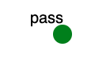

Passwords - USC/ISI
Contents
Overview
This exercise teaches students how to crack passwords and demonstrates how easily can a password be cracked.Required Reading
Introduction
Everyone uses passwords. They have many advantages - they are often easier to remember than other alternatives, users are familiar with the concept and all servers support them. But they also have many disadvantages. Users create passwords that are easily guessed by automated programs with dictionaries. Users also tend to reuse their passwords on multiple servers, making it possible to compromise one server, crack the passwords and then use them to access other accounts by the same user. This exercise demonstrates the "easily guessed" part of the problem. Students will be asked to use popular password cracking tools to crack a few commonly used passwords.Assignment Instructions
Setup
Setup
- If you don't have an account, follow the instructions here.
- Create an instance of this exercise by following the instructions here, using passwords as Lab name. Your topology will look like below:

. - After setting up the lab, access your pass node. Do not run this exercise on the XDC. ssh to the pass node.
Tasks
 Always follow your teacher's guidelines around the use of AI. If use of AI is permitted for this exercise submit additional materials as indicated below for the AI-option.
Always follow your teacher's guidelines around the use of AI. If use of AI is permitted for this exercise submit additional materials as indicated below for the AI-option.
Cracking passwords
You will find the passwords to crack in /var/passwords directory. They are stored as hashes, along with the usernames they belong to. This file is obtained directly from /etc/passwd and /etc/shadow files by using John the Ripper's unshadow utility.
Your task is to crack as many passwords you can from this file. Please do not attempt to crack real users' passwords on SPHERE as this is illegal. Please take careful notes of what commands you used with what options and how long (roughly, in 4h increments is fine) it took to crack each password. Cracking may take long so make sure to:
- Use nohup before your command and spawn the process like this:
nohup john /var/passwords &so the cracking would continue to run after you break the SSH connection to your node. - Use John the Ripper's resume option to resume when you swap in later to continue where you left off.
What can go wrong
- Experiment cannot be swapped in. First, check the error message you will receive in the email. One possible reason for this is that the NS file was changed from the one listed above. Verify that the file looks exactly like supplied with this exercise. Another reason may be that there is a lack of available nodes in SPHERE and the error message will say so. This happens ocassionally and usually resources become available in a few hours. If you tried several times and could not find enough resources or could not diagnose why the experiment was not swapping in, forward the error message you get from SPHERE to your TA.
Submission Instructions
Please submit the list of cracked passwords and note which command was used to crack each password. Also note how long it took (roughly) for each password to be cracked. For example, if I ran the command john /var/passwords and it cracked password for user anne during the first swapin (4 hours), and the password were abc I would write: user:anne pass:abc command:john time:4h
AI-option: If you have used AI to crack passwords in this exericse, you must provide hand-written answers to the following questions. You can write the answers on a piece of paper, take a picture of that paper and then add the picture to your submission, in a separate "AI" folder. Note: you can ask AI to provide answers to the learning questions below.
- Which AI you have used? How many tokens did you spend overall? How much time did you spend overall?
- How many times did you have to prompt the AI to get the final answer? Did you let it run commands for you or just suggest commands and answers
- Submit all your prompts. Prompts do not have to be hand-written. You can copy-paste the prompts and the results into a file called prompts.txt in the "AI" folder.
- Learning question: Which passwords took the shortest time to crack? Why?
- Learning question: Which passwords took the longest time to crack? Why?
- Learning question: Drawing from these observations how would you advise someone to choose their password to maximize chances that it will not be cracked?